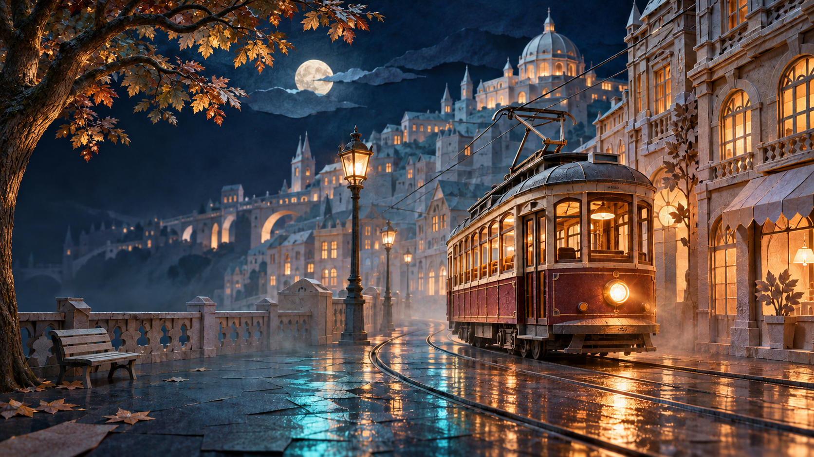
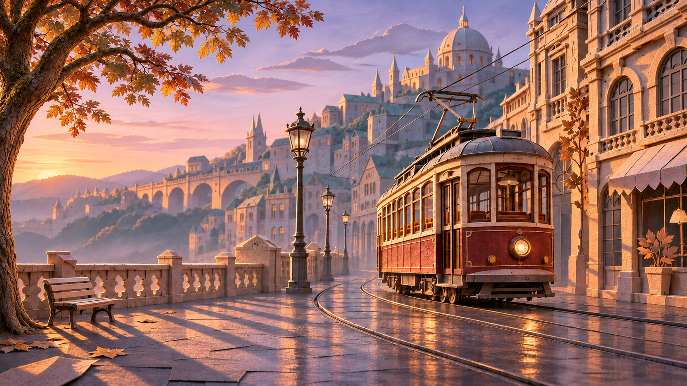
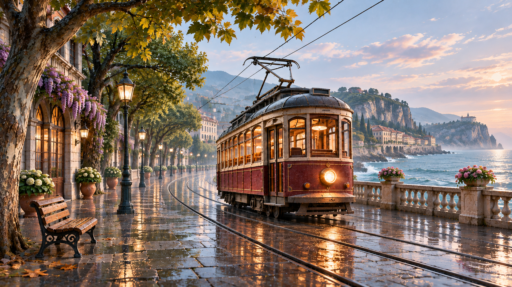

ИССЛЕДУЙТЕ ПРОЦЕСС
Один трамвай. А если поменять место?
Мы уже получили кадр в старом городе. А что, если тот же трамвай окажется у моря? Покажем, какой шаг изменить — и что получится.
Начните с ноды «Место»



ПРОЦЕСС / 01—05
Посмотрите, из чего
собрана сцена
Сначала выберите другое место для трамвая. Затем попробуйте изменить освещение — и проследите, как каждое решение ведёт к результату.
05 / РЕЗУЛЬТАТНОЧЬ
Все решения встречаются здесь.↗
03 / АТМОСФЕРА
Ночной свет
Время суток меняет настроение сцены. Выберите другое освещение и посмотрите, что останется прежним.
ОДНО ИЗМЕНЕНИЕ / НОВЫЙ КАДР
Место изменилось.
Герой остался.
Вы переместили трамвай из старого города к морю. Та же нода героя участвует в новом результате.
СТАРЫЙ ГОРОДУ МОРЯ
ИДЕЯ НОДОВОЙ СИСТЕМЫ
Меняйте часть.
Сохраняйте целое.
Каждая нода отвечает за своё решение. Связи показывают, как решения складываются в результат.
Исследовать сцену ещё раз